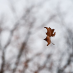

Ed eccomi qui, seduto sulla panchina di un bel parco, all’ombra degli alberi, immerso nei miei pensieri, quando una foglia decide di atterrare sulla punta del mio naso. Non so cosa abbia pensato la foglia, forse “Ehi, sembra un posto accogliente per riposare”, o forse “Voglio vedere il mondo da una prospettiva diversa!”. E come dice il proverbio: “Se la foglia sta sul naso troppo a lungo, il vento la farà volare via!” che io sono così concentrato che quando arriva una folata di vento e la porta via lontano, mi sento come un novizio alla ricerca dell’illuminazione. Mi sento spaesato e confuso. Alzo gli occhi e cerco disperatamente la mia foglia ovunque, ma non la trovo. Allora comincio a chiedere aiuto, a chiunque incrocio per il parco. “Avete visto una foglia?” chiedo a una coppia di anziani che mi guardano con una faccia di totale perplessità, e uno di loro mi risponde: “Tu una foglia? E noi allora? Stiamo cercando le chiavi di casa nostra, ragazzo!”. E io ribattendo immediatamente: “Ma che.. per caso anche a voi le ha portate via il vento?!?”E bhè insomma che dire, c’è sempre chi stà peggio di noi!
Fogliaultima modifica: 2023-03-13T19:03:58+01:00da
Reposta per primo quest’articolo